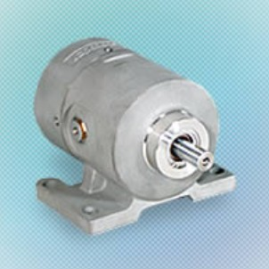
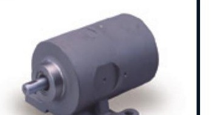
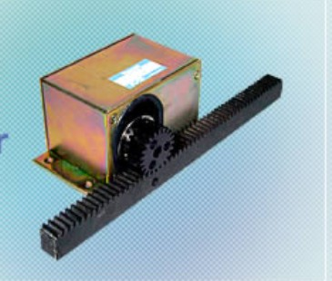
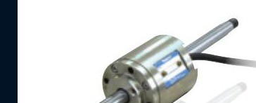
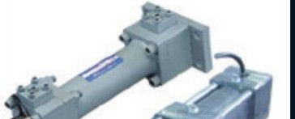

Sensores de giro (Absocoder)
Sensores electromecánicos puros — sin componentes electrónicos ni ópticos internos, miden posición absoluta por reluctancia magnética.

VRE — Sensor de una vuelta
Sensor de posición rotativa absoluta de una vuelta (single-turn).
Ver producto
MRE — Sensor multivuelta
Sensor de posición rotativa absoluta multivuelta (multi-turn).
Ver producto
Built-In Rack-and-Pinion
Sensor integrado en cremallera y piñón para detección de desplazamiento.
Ver productoEncoders inteligentes (ezABSO)
Encoder rotativo de inducción electromagnética con convertidor integrado — mide posición absoluta, velocidad, vibración y temperatura.
Sensores lineales
Medición de desplazamiento lineal absoluto — de montaje externo, integrado dentro de cilindro, o como cilindro completo ya sensado de fábrica.

VLS — Sensor lineal
Sensor de posición lineal absoluto, de propósito general o especial, de montaje externo.
Ver producto
Inrodsensor
Sensor lineal inteligente que se instala dentro de un cilindro hidráulico existente.
Ver producto
CYLNUC
Cilindro hidráulico o neumático completo, con sensor de posición ya integrado de fábrica.
Ver productoSensores de proximidad
Detección de proximidad magnética de alta resistencia para servicio pesado.